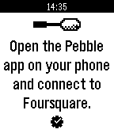

Spoon
Spoon is a simple Foursquare check-in app for Pebble.
spoon
Spoon is a simple (experimental) Foursquare check-in app for Pebble. The watchapp lists nearby venues using your phone's location. Pick a venue and check-in. All from your wrist.

or download: http://www.mypebblefaces.com/apps/10947/8172/